地政学
ブラチスラヴァはオーストリア、ハンガリー国境に近く、ウィーン圏と日常的につながります。EU、NATO、シェンゲン、ドナウ物流が首都機能を広げ、小国外交を具体化します。国境都市の実務も担います。河港の安全も重要です。
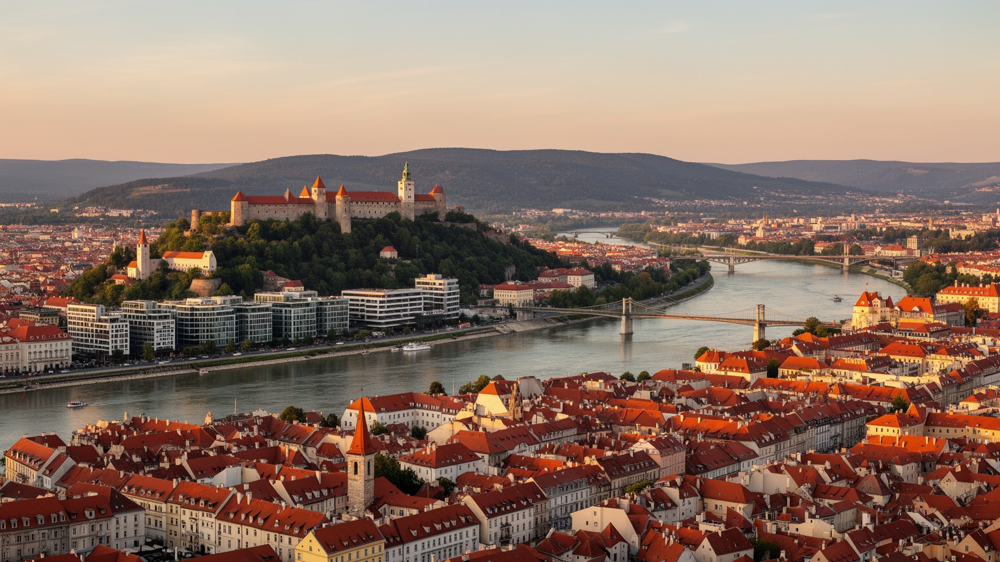
🇸🇰 スロバキア / ドナウ川 / World City Atlas
オーストリアとハンガリーに接するドナウ川の首都で、城、旧市街、政府機関、大学、自動車産業、IT、ワイン丘陵、住宅開発が近い距離で重なります。
都市の骨格
ブラチスラヴァはドナウ川の北岸を中心に広がり、ウィーン、ブダペスト、ブルノへ近い位置にあります。旧王都の記憶とEU時代の物流、通勤、住宅開発が同じ都市面で重なります。
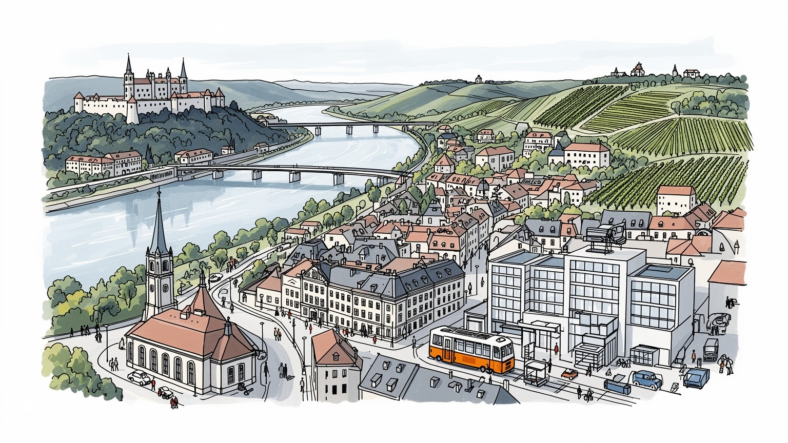
ブラチスラヴァはオーストリア、ハンガリー国境に近く、ウィーン圏と日常的につながります。EU、NATO、シェンゲン、ドナウ物流が首都機能を広げ、小国外交を具体化します。国境都市の実務も担います。河港の安全も重要です。
周辺には自動車組立、部品、IT、金融、物流、行政、大学研究が集まります。高賃金の専門職と市場の小商い、配達、介護、飲食の労働が交差し、通勤圏の住宅費と技能移民、教育も都市の格差をなお今も深く映します。
旧市街にはカトリック、プロテスタント、ユダヤの記憶と戴冠都市の歴史が残ります。劇場、クラブ、ラジオ、SNS、アイスホッケーの熱気が、スロバキア語の文化と祝祭を日常へ広げます。祈りの記憶も都市に残ります。
城、旧市街、聖マルティン大聖堂、川辺、ワインの丘に人が向かいます。住民には住宅価格、通勤、学校、子どもの遊び場、高齢者の移動、市場の買い物、冬の風、夏の川風、食卓の匂い、市場の声、川風の音も日常です。
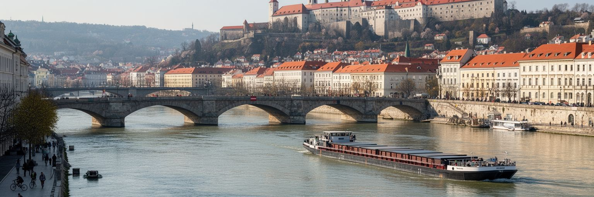
ブラチスラヴァはドナウ川の曲がりに置かれた首都で、都市の西側ではオーストリア、南側ではハンガリーがすぐ近くにあります。国境は郊外の線ではなく、通勤、買い物、大学、物流、観光、住宅選択に入り込む日常の条件です。ウィーンまでは鉄道や道路で短く、ブダペストやブルノとも中欧の回廊で結ばれます。冷戦期には鉄のカーテンが都市の西端を閉じ、川と国境は分断の象徴でもありました。EU加盟とシェンゲン参加後、その線は移動の障壁から機会へ変わりましたが、賃金差、住宅価格、通勤時間、国境管理、移民政策の影響は残ります。ドナウ川は景観だけでなく、貨物、洪水、防災、親水空間、観光船の舞台でもあります。旧市街の石畳から川辺の新しい業務地区へ歩くと、王国時代の記憶と現代の投資が同じ河岸で向き合います。ブラチスラヴァの地政学は大国の首都のような威圧感ではなく、近すぎる隣国と毎日調整する実務に表れます。川を渡る橋、駅、郊外道路、サイクリング道が、国境を意識させながらも生活を普通のものにしています。国境の近さは緊張だけでなく、病院、学校、空港、買い物先を複数の国から選ぶ柔軟さも生みます。その便利さを誰が使えるのかを見ると、都市の開放性と所得差が同時に見えてきます。小さな首都でありながら、広域の判断が日々の移動へ直結します。
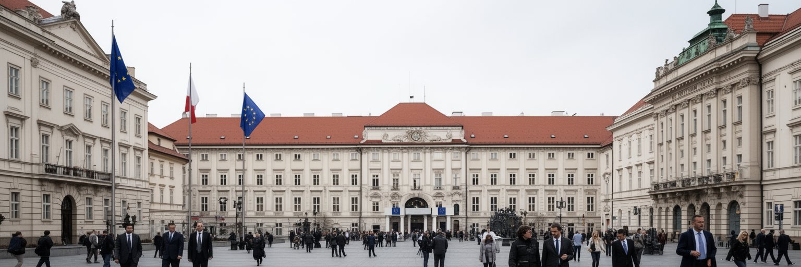
ブラチスラヴァは1993年の独立後、スロバキア国家の首都として行政、議会、外交、中央銀行、主要大学、報道機関を集めてきました。国土の端に位置するため、首都が国の中心にないという感覚もありますが、その位置こそ欧州統合の実務には向いています。政府機関はEU予算、法制度、エネルギー、安全保障、ウクライナ支援、移民、産業政策を扱い、決定は地方自治体や工場、学校、病院へ届きます。小国の首都では、政策担当者、企業、大学、NGO、外国大使館の距離が近く、合意形成が速い一方で、専門人材や行政容量の限界も見えやすくなります。旧市街の宮殿や広場は観光の背景ですが、そこにはハンガリー王国の議会都市、チェコスロバキアの一部、社会主義時代、民主化、EU加盟という制度の層が重なっています。ブラチスラヴァを読む時、首都機能は建物の配置だけではありません。国際ルールを国内の税制、教育、交通、産業支援へ翻訳する能力です。小さな首都が欧州の大きな議題を扱うため、政治は国境を越えた実務として住民の暮らしに戻ってきます。省庁の人事や予算は、地方の道路、病院、学校へも影響します。首都の判断が国内格差を縮めるのか、広げるのかまで見て初めて、この都市の政治的な重みが分かります。政治の近さは監視の近さでもあり、市民社会と報道の役割が大きくなります。
ブラチスラヴァの経済を支える大きな柱は、自動車産業と知識サービスです。市域や周辺には自動車組立、部品、物流、設計、品質管理、会計、IT、金融、ビジネスサービスが集まり、スロバキアの輸出型経済を首都圏から動かしています。工場は広い敷地と高速道路、鉄道、サプライチェーンを必要とし、オフィスは大学教育、語学力、デジタル技能、国際企業との接点を求めます。これらは高い賃金と専門職の機会を生みますが、住宅価格、通勤距離、技能格差、外国人労働者の受け入れも重くします。中心部のカフェやコワーキングで働く人と、郊外のシフト勤務に向かう人は同じ都市圏にいます。朝の駅前では作業服、学生、配達員が交じり、パンとコーヒーの匂いの横で小さな売店が新聞や軽食を売ります。自動車産業は電動化、部品再編、エネルギー価格、欧州規制に左右されるため、首都圏の安定は単一の成功モデルに頼れません。ITや研究開発が広がるほど、大学、職業訓練、住宅、公共交通の質が競争力になります。輸出工場とデジタル職が同じ首都圏で働くことが、中欧都市としての厚みを作っています。賃金の高い職場が増えても、清掃、介護、飲食、配達、警備、市場の小商いが都市を今も支えます。成長を評価するには、専門職だけでなく、生活サービスの労働条件まで見る必要があります。
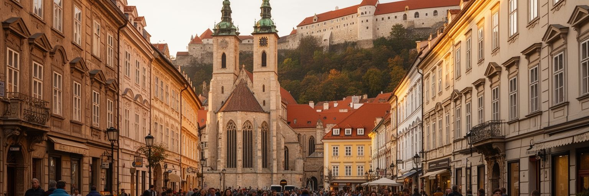
ブラチスラヴァ旧市街は、単なるかわいらしい中欧の観光地ではありません。かつてプレスブルク、ポジョニとも呼ばれ、オスマン帝国の圧力でブダが失われた時代にはハンガリー王国の戴冠都市として重要な役割を担いました。聖マルティン大聖堂、ミハエル門、広場、宮殿、城へ続く坂道には、王国、貴族、市民、聖職者、商人の記憶が折り重なります。狭い街路には観光客向けの店やレストランが並び、ブリンゾヴェー・ハルシュキ、焼き菓子、ワイン、ビールの匂いが夜の音楽と交じりますが、その背後には保存、家賃、住民の生活、騒音、短期滞在型宿泊の問題があります。旧市場会館や小さな土産店、屋台、古本の売り手は、SNSで広がる観光動線と地元の買い物を同時に相手にします。歴史地区を美しく整えるほど、学校、郵便、診療所、子どもの日常が遠ざかる可能性もあります。旧市街の価値は、建物を写真の背景にすることだけではなく、多言語の都市史を読み解けることにあります。ドイツ語、ハンガリー語、スロバキア語、ユダヤ人共同体の記憶は、都市が一つの民族だけで作られたわけではないことを示します。観光の歩行者空間は魅力ですが、そこに暮らす人の権利と商いの多様性を保てるかが問われます。昼の広場、ラジオが流れる店先、夜の飲食街では、同じ通りの意味が変わります。保存、生活、観光収入をどう釣り合わせるかが、旧市街を生きた地区に保つ条件です。
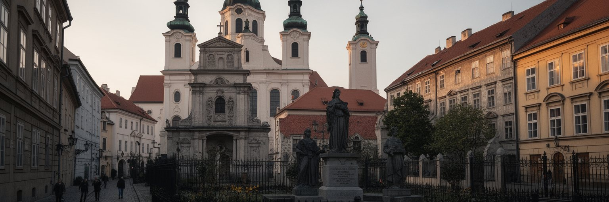
ブラチスラヴァの宗教と文化を読むには、現在残る教会だけでなく、失われた共同体にも目を向ける必要があります。旧市街にはカトリックの大聖堂や修道院、プロテスタントの教会、正教やギリシャ・カトリックの信仰、ユダヤ人共同体の記憶が残ります。ナチス占領、ホロコースト、戦後の追放、社会主義期の都市改造は、街の人口構成と宗教空間を大きく変えました。城下の旧ユダヤ人地区の多くは橋や道路の建設で失われ、記念碑や博物館がその不在を伝えます。多民族都市だった歴史は、観光の多彩な物語として語られますが、同時に暴力、同化、排除、沈黙の歴史でもあります。今日の公共空間には英語、ドイツ語、ハンガリー語、ウクライナ語、チェコ語が重なり、移住者や留学生も増えています。宗教施設は礼拝だけでなく、音楽会、慈善、教育、追悼、クリスマス市やワイン祭りの季節感を支えます。祝祭の日には鐘の音、合唱、焼き菓子の甘い匂いが広場へ広がり、子ども連れと高齢者も同じ道をゆっくり歩きます。文化の豊かさを語る時、失われた声を装飾に変えず、記憶として丁寧に扱うことが大切です。結婚式、葬儀、聖歌、記念式典、博物館の展示は、都市が過去と関係を結び直す場です。多様性を祝う言葉だけでなく、失われた隣人を思い出す態度が文化の深さを支えます。記憶の場所を歩くことは、観光以上の学びになります。
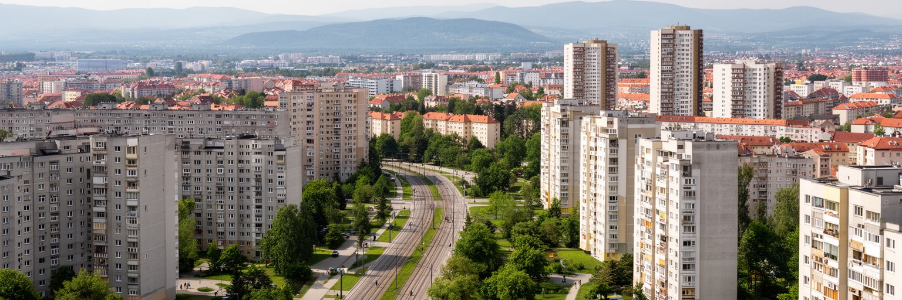
ブラチスラヴァの成長は、住宅の問題として住民に強く感じられます。中心部の歴史地区、社会主義期の大規模団地、新しい高層住宅、郊外の戸建て、近隣自治体の住宅地が、所得や家族構成に応じて選ばれます。首都圏の賃金は国内で高い一方、住宅価格と家賃も高く、若い世帯や公共サービスで働く人には負担が重くなります。ペトルジャルカのような大規模団地は、かつて単調な住宅地と見られましたが、トラム延伸、学校、公園、商業施設の改善によって、都市の重要な生活基盤になっています。放課後の遊び場、アイスホッケーやサッカーに向かう子ども、買い物袋を下げた高齢者、犬の散歩、冬の湿った冷気は、団地を抽象的な住宅政策から生活の場へ戻します。郊外化が進むと、車通勤、道路混雑、駐車、学校不足、緑地の減少が重くなります。越境的な住宅選択も国境都市ならではの現象です。住宅は投資商品でもありますが、住民にとっては通勤時間、子育て、介護、近所づきあい、公共交通へのアクセスと直結します。ブラチスラヴァをよい首都にするには、旧市街の景観だけでなく、団地の改修、手頃な賃貸、歩ける近隣、緑地、防暑、学校と医療への近さを整える必要があります。建物の新しさだけでなく、近所に保育所、診療所、食料品店、図書館、運動できる場所があるかも重要です。住宅政策は日々の安心を作る都市の約束です。
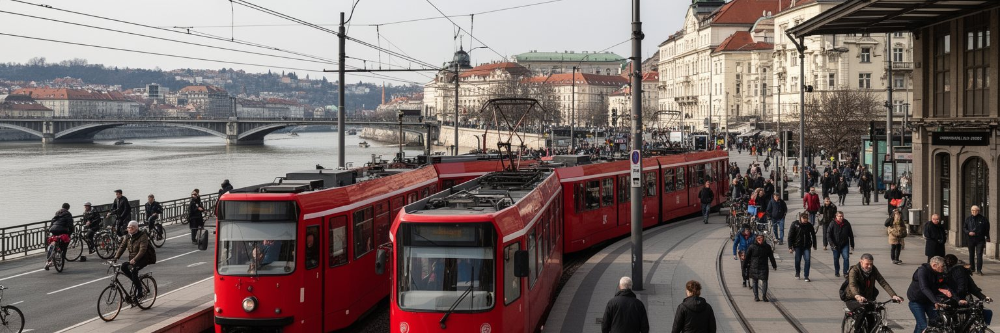
ブラチスラヴァの移動は、市内交通と国際交通が重なるところに特徴があります。トラム、バス、トロリーバス、鉄道、ドナウ川の橋、高速道路、自転車道が、旧市街、団地、大学、工場、郊外、空港を結びます。ウィーン方面への鉄道や道路は、観光だけでなく通勤、商談、空港利用、学生の移動にも使われます。市内では中心部の道路容量が限られ、車の増加が渋滞、駐車、歩行者空間の圧迫を生みます。公共交通を強くすることは、環境政策であると同時に、住宅費の高い首都で生活圏を広げる社会政策でもあります。ペトルジャルカや新興住宅地へトラムを伸ばすことは、団地の孤立を減らし、通勤と学校へのアクセスを改善します。自転車や徒歩の道は、観光客のためだけでなく、川辺、公園、学校、職場を日常的につなぎます。広域交通が便利になるほど、都市はウィーン圏や西スロバキアの一部として動きますが、その分、中心部の地価や混雑も上がります。ブラチスラヴァの交通課題は、大都市ほど巨大ではありません。しかし小さな首都だからこそ、橋一本、トラム一本、駅前の設計が生活時間を大きく変えます。移動の質は、国境都市の開放性を住民の便利さへ変える鍵です。乗り換えの分かりやすさ、夜間の本数、停留所の日陰や安全性も、都市の評価を左右します。移動しやすい首都は、所得や年齢にかかわらず機会へ近づける首都です。
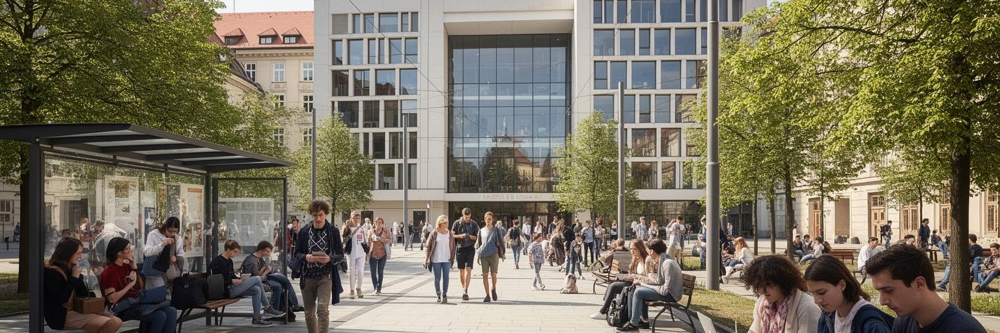
ブラチスラヴァにはコメニウス大学、スロバキア工科大学、経済大学などが集まり、学生、研究者、留学生、若い専門職が都市の空気を作っています。大学は国家の人材育成だけでなく、IT、医療、工学、法律、行政、文化、言語教育を支える基盤です。卒業生は首都の企業や省庁へ進み、あるいはウィーン、プラハ、ブダペスト、ベルリンへ移ります。若者にとって、ブラチスラヴァは国内で最も機会が多い都市ですが、住宅費、初任給、インターンの質、公共交通、夜の安全、文化施設の価格が生活を左右します。英語で働く職場や国際企業が増える一方、スロバキア語の公共文化、地域社会とのつながりも大切です。カフェ、図書館、クラブ、劇場、川辺の広場、学生メディア、ラジオ番組、SNSの議論は、学生が都市に関わる入口になります。ウクライナからの避難者や周辺国からの若者も、教育と仕事を通じて首都の多様性を広げています。人材流出を恐れるだけではなく、外へ出た人が戻りやすい研究環境、住まい、子育て、起業支援を整えることが必要です。週末のライブ、映画祭、スポーツ観戦、深夜トラムの混み方まで、若者の居場所は都市の温度を決めます。大学が地域企業、文化施設、自治体と結びつけば、学生は消費者ではなく都市を作る参加者になります。若者の居場所は、首都の国際競争力にもつながります。
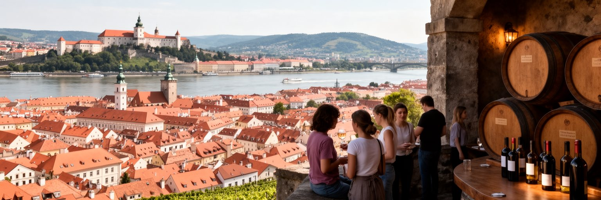
ブラチスラヴァの観光は、巨大な名所を一つ見る旅というより、歩ける距離に集まる歴史と生活をゆっくり読む旅です。城からはドナウ川、旧市街、新しい業務地区、ペトルジャルカの団地、オーストリア側の平野まで見渡せます。旧市街では聖マルティン大聖堂、ミハエル門、広場、宮殿、カフェ、劇場が連なり、短い滞在でも中欧の層を感じられます。近郊には小カルパチア山地のワイン村があり、ブドウ畑、地下蔵、秋の祭りが首都の日常圏とつながっています。ウィーンからの日帰り客やドナウ川クルーズは重要ですが、滞在時間が短いと消費は中心部に偏りがちです。観光の質を高めるには、案内、公共トイレ、夜の安全、歩道、混雑管理、地元店への誘導が欠かせません。旧市街のレストランや土産店だけでなく、ミレティチョヴァ市場の野菜、花、肉加工品、川辺の公園、現代建築、団地の公共空間、ワイン地域まで視野を広げると、都市の輪郭は豊かになります。ブラチスラヴァの魅力は、城の眺めと市場の買い物、ワインの休日、音楽が漏れる夜の路地、トラムで帰る時間が無理なくつながるところにあります。旅程に余白があれば、朝の市場、住宅地の公園、川辺の散歩、ホッケーやサッカーの試合日まで見えてきます。短い首都滞在を深い都市理解へ変えるには、歩く速度と耳を澄ます時間が大切です。
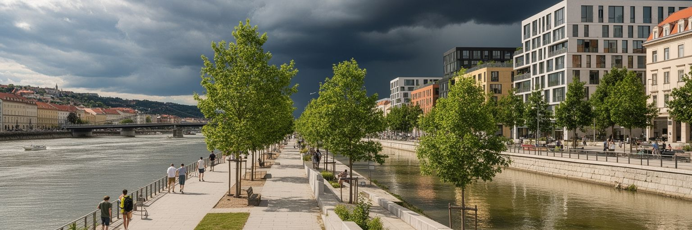
ドナウ川辺はブラチスラヴァの成長を強く映す場所です。かつて工業、港湾、道路に使われた土地の一部は、住宅、オフィス、商業、文化施設、遊歩道へ変わり、都市の水辺の印象を大きく変えています。川辺が開かれることは住民にとって歓迎されますが、高級住宅や商業施設だけが並ぶと、公共空間の公平性は弱くなります。ドナウ川は美しい景観であると同時に、洪水、地下水、暑熱、風、堤防、橋の管理を伴う自然の力です。気候変動で熱波や強い雨への備えが必要になり、川辺の緑地、透水性、日陰、冷却効果は都市の健康を左右します。新しい開発は税収や雇用を生みますが、学校、交通、公共サービス、歴史的景観への負担も増やします。ブラチスラヴァの川辺をよくするには、投資を拒むのではなく、誰が川へ近づけるのか、洪水時に何を守るのか、住民が日常的に使える場所があるのかを問う必要があります。川沿いのベンチ、木陰、自転車道、広場、文化施設は、観光客より先に住民の暮らしを豊かにします。ドナウの水面は都市の看板ですが、その価値は不動産の価格ではなく、夏の日に誰もが歩き、休み、川を感じられる公共性にあります。水辺の再開発が周辺地区の家賃を押し上げる時、利益の一部を交通、緑地、防災へ戻せるかも重要です。川辺は投資の舞台である前に、都市の共有財産です。
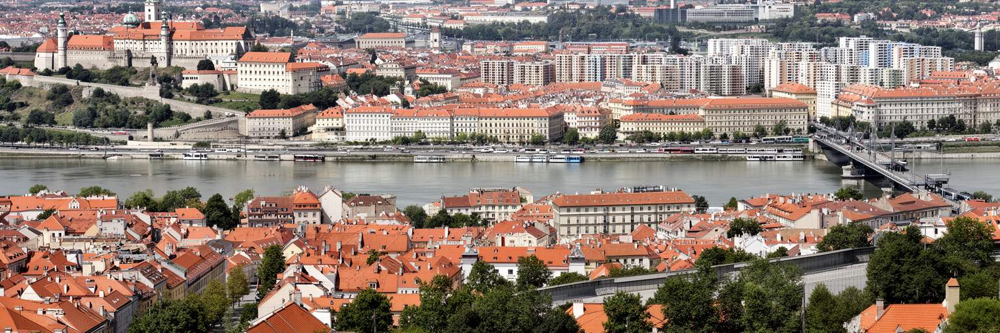
ブラチスラヴァは人口規模では大都市圏に及びませんが、現代の中欧を読む論点が凝縮された首都です。ドナウ川、三つの国境、EUとNATO、旧王国の記憶、社会主義期の団地、独立後の首都機能、自動車とIT、大学、ワイン丘陵、川辺開発が、短い移動距離の中に並びます。旧市街の観光だけを見ると、穏やかな小首都に見えますが、実際には輸出産業、国際通勤、住宅価格、気候対策、移民、歴史記憶を同時に扱う都市です。スロバキアの政治と経済がここに集中する一方、国土の東西格差や地方の課題をどう受け止めるかも問われます。首都が豊かになるほど、地方との距離が広がる可能性があります。ブラチスラヴァの強みは、ウィーン圏に近い開放性と、歩いて理解できる小ささです。その弱みも同じ場所にあります。住宅や公共空間が高所得者と観光客に偏れば、首都の便利さは住民全体のものではなくなります。城から川を眺める時、そこには中世の記憶だけでなく、工場、大学、トラム、団地、国境道路、気候リスクが重なっています。ブラチスラヴァを読むことは、小さな首都が欧州の変化をどのように日常へ翻訳しているかを見ることです。大きな都市では見えにくい制度と生活の近さが、この街ではすぐに感じられます。だからこそ、政策、開発、観光の選択が街路の使いやすさへ直接表れます。